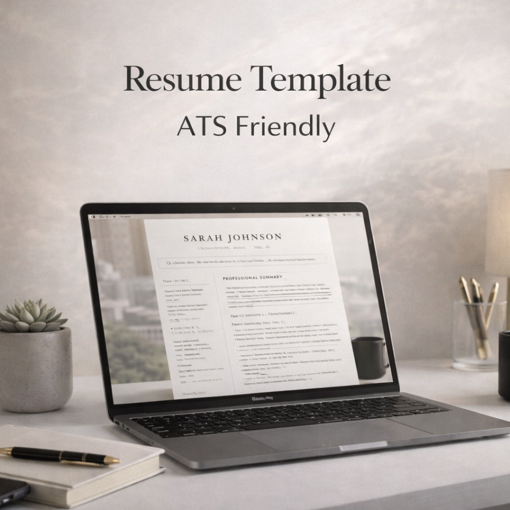

ATS-friendly resume format
Use a layout that avoids clutter and keeps your experience, skills, and education easy to scan for recruiters and applicant tracking systems.
Build a clean, ATS-friendly resume with AI guidance. Improve bullet points, sharpen wording, and create a professional resume for internships, graduate roles, and experienced-job applications.
No credit card to start. Build and edit free. Pay only if you choose to unlock PDF or HTML export.
This page now targets the search terms people actually use: AI resume builder, ATS resume builder, resume editor, and CV generator. That helps both search visibility and conversion.
Use a layout that avoids clutter and keeps your experience, skills, and education easy to scan for recruiters and applicant tracking systems.
Turn weak job descriptions into clearer, stronger bullet points with action verbs and more relevant wording for the role you want.
Create resumes for internships, graduate schemes, engineering jobs, business roles, tech positions, and general professional applications.
Enter your work history, education, skills, projects, and certifications into the editor.
Use the AI editor to tighten wording, improve bullet points, and make the resume more job-relevant.
Preview the final result, refine it, and unlock PDF or HTML export when you are happy with the content.
MyResumeMakerAI focuses on a single clean resume format that works well for ATS screening and human review. That makes it easier to produce a polished result without spending hours tweaking layout settings.

Build a first professional resume for internships, part-time jobs, graduate programs, and entry-level roles.
Reframe transferable experience with stronger wording and clearer, more relevant bullet points.
Refresh outdated formatting and improve content so your resume looks current, focused, and easier to read.
An ATS-friendly resume is designed so applicant tracking systems can read your information correctly before a recruiter ever opens the file. That usually means clear section headings, straightforward formatting, readable text, and strong content. MyResumeMakerAI is built around those principles so you can create a resume that is both software-friendly and recruiter-friendly.
A lot of job seekers lose time trying complex templates that look impressive but hurt readability. A simpler layout with strong bullet points usually performs better. That is why this AI resume builder emphasizes content quality, structure, and clarity over decorative design.
Yes. You can build and edit your resume for free. Payment is only needed if you decide to unlock export access.
Yes. The resume format is designed to work well for US and UK job applications and is also suitable for many international roles.
AI can help improve wording, clarity, and relevance, especially for bullet points. You should still review the final text to make sure it accurately reflects your experience.
Students, graduates, engineers, business applicants, tech candidates, career changers, and professionals updating an older resume can all benefit from it.
Create a professional ATS-friendly resume, improve it with AI, and export when you are ready.